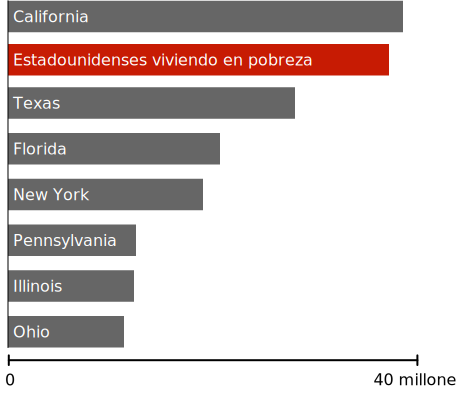

Riqueza vista a escala
$1,000
$63,179 (Ingreso familiar promedio EEUU)
$1 millón
$1 billón
$139 billones (riqueza de Jeff Bezos)
Es broma, estamos recién a ⅓ del camino. Pero sigue avanzando, hay más que ver.
Hasta las fortunas de gente muy rica son eclipsadas por la riqueza incomprensible del 0.0001%.
Estas personas se ven a sí mismas como fabulosamente ricas, y a menudo se oponen a políticas que buscan reducir la desigualdad.
Pero muchos no han comprendido completamente la enorme brecha entre ellos y los súper ricos.
Podemos tener un mundo en el que exista gente rica, sin entregar casi todo el dinero a los súper ricos.
Ningún ser humano necesita o merece tanta riqueza.
400 Estadounidenses más ricos ($2.96 trillones)
Un trillón de dólares es una cifra tan grande que bien podrías decir "tropecientos zillones de dólares." Entonces, en esta sección, trataremos de comprender la escala de esta cifra observando lo que se podría lograr con fracciones de esta riqueza.
Mientras avanzamos, trata de recordar: toda esta riqueza es controlada por un grupo tan pequeño que podría llenar un solo avión 747—con 260 asientos de sobra.
¿Qué podríamos hacer con 3% de este dinero?
Evaluar a Cada Estadounidense por Coronavirus
Al momento de esta publicación, las pruebas en los Estados Unidos están muy lejos de las que se necesitan para reabrir la economía. Según algunas estimaciones, aumentar las pruebas hacia alrededor de 30 millones de pruebas por semana costaría alrededor de $100 billones en total, o alrededor del 3% de la riqueza controlada actualmente por los 400 estadounidenses más ricos.
Erradicar la Malaria Permanentemente
La malaria es una de las peores enfermedades infecciosas jamás vistas en la humanidad, matando posiblemente a más personas que cualquier otra en la historia. Solo en el siglo XX, la malaria mató a más personas que la Peste Negra.
El coronavirus nos ha mostrado todos los horrores de vivir con una enfermedad mortal. Lamentablemente, para gran parte del mundo, este horror es una constante de la vida diaria incluso antes del coronavirus.
Todas estas muertes se pueden evitar. El tratamiento y la prevención de la malaria es ciencia bien entendida, practicada universalmente en el mundo desarrollado.
Se estima que la malaria podría erradicarse globalmente en el 2030 por un costo cercano a $1.84 por persona en riesgo por año, o alrededor de $100 billones en total. Esto representa cerca del 3% de la riqueza que actualmente poseen los 400 estadounidenses más ricos.
Alrededor de 800 niños morirán de malaria hoy. Un pequeño grupo de personas súper ricas podría detenerla por una suma de dinero tan pequeña que probablemente ni siquiera notarían su ausencia. Pero eligen no hacerlo.
¿Qué podríamos hacer con 5% de este dinero?
Entregar $1,200 a cada hogar Estadounidense.
El reciente estímulo por coronavirus fue el más grande jamás aprobado por el Congreso. Fue financiado totalmente a través de gasto deficitario, que será pagado por los contribuyentes por generaciones. La carga de devolver esta deuda podría borrarse en un instante con un impuesto a los súper ricos tan pequeño que ni siquiera lo sentirían.
La riqueza de 400 estadounidenses podría haber financiado toda la ley CARES, incluidos los rescates corporativos, el aumento del desempleo, y expansión de pruebas—con casi un trillón de dólares de sobra.
En cambio, los contribuyentes Estadounidenses estarán estancados con la cuenta.
Sacar a todos los Estadounidenses de la pobreza.
Población de Estados comparados a la pobreza, 2019
Cada persona en Estados Unidos podría salir de la pobreza con un subsidio único en efectivo de cerca de $10,000 por familia empobrecida (y cerca de $7,000 para personas empobrecidas). El costo total sería de $170 billones, un poco más del 5% de la riqueza actualmente controlada por 400 individuos.
Puede parecer ilógico que un subsidio único pueda tener un impacto duradero en la pobreza crónica. Pero una de las sorprendentes verdades de la pobreza es que es fluida. Los Estadounidenses entran y salen de la pobreza muchas veces durante su vida, y un buen año puede tener un efecto masivo y duradero.
Actualmente, una gran cantidad de datos respalda la idea de que transferencias únicas en efectivo pueden transformar permanentemente una economía local. Al recibir una ganancia inesperada, la gente invierte en su futuro. Vuelven a la escuela, obtienen transporte, pagan cuidado de niños, pagan deudas debilitantes y hacen muchas cosas para mejorar su panorama profesional y su futuro financiero.
En Estados Unidos, por toda la gente que escapa de la pobreza en cualquier año, cerca de la mitad se mantiene fuera de la pobreza por los siguientes cinco años. Cerca de un tercio aún siguen fuera de la pobreza diez años después.
Esta no sería una solución permanente para todos. Seguramente, algunos regresarían rápidamente a la pobreza, y otros enfrentan deudas tan grandes que el subsidio haría poca diferencia. Pero para decenas de millones de Estadounidenses, este sería un evento que les cambiaría la vida. Sería un programa social que defina a una generación que reestructuraría nuestra economía en las próximas décadas.
¿Qué podríamos hacer con 6% de este dinero?
Devolución de impuestos de 2018 a hogares con ganancias bajo $80,000
En 2018, el ingreso fiscal por impuestos de todos los hogares Estadounidenses que ganan menos de $80,000 al año combinados fue alrededor de $200 billones. Este dinero—tomado enteramente de Estadounidenses pobres y de clase media—podría ser devuelto por una pequeña fracción de la riqueza controlada por el .0001%.
¿Qué podríamos hacer con 8% de este dinero?
Proveer agua potable y acceso a baños a cada humano en la tierra.
Cerca de 844 millones de personas no tienen acceso a agua limpia de ningún tipo. Casi el mismo número no tiene acceso a un inodoro o letrina de ningún tipo y, por lo tanto, defeca al aire libre.

Sin agua limpia
El agua contaminada es una gran fuente de enfermedades, como el cólera, la disentería, y la fiebre tifoidea. Se estima que el agua contaminada mata cerca de 829,000 personas cada año, haciéndola una de las asesinas más grandes del mundo. El costo de proveer agua limpia y eliminación de deshechos para todos en el mundo sería de $240 billones, o el 8% de la riqueza controlada por los 400 Estadounidenses más ricos.
¿Qué podríamos hacer con 40% de este dinero?
Dar $10,000 a cada hogar Estadounidense
A medida que los Estadounidenses debaten cómo y cuándo abrir la economía después del coronavirus, con frecuencia nos encontramos con una elección aparentemente imposible entre arriesgar millones de vidas o caer en una gran depresión debido a cierre continuo. Esta es una repugnante mentira.
El dinero para superar esta tormenta mientras la cuarentena se mantiene existe, solo es cuestión de encontrar la voluntad política para tomarlo.